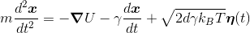
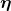
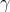
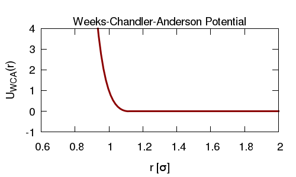
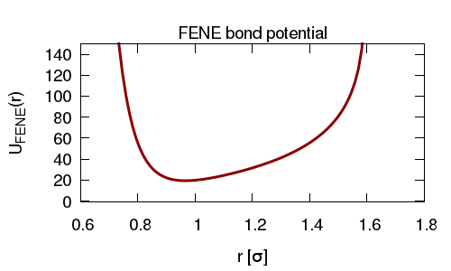
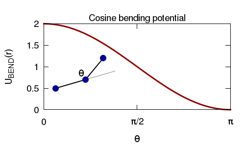
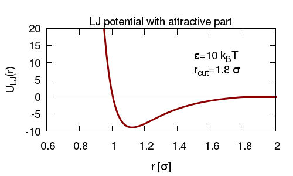

A very basic LAMMPS tutorial
This is a very simple and quick tutorial on how to use LAMMPS to simulate a polymer using Langevin dynamics. I've tried to add links to the LAMMPS manual and other sources where appropriate. The input scripts include further comments detailing what each command does.
1. Compiling LAMMPS
The LAMMPS source code can be downloaded as a tarball from the LAMMPS website: lammps.sandia.gov/download.html.
To compile with the basic packages, download and unpack, switch to the src/ directory and type:
make serial
or make mpi
to compile serial or mpi versions. All the packages required to do the simulations in 2-5 below should be enabled by default (if you download via git checkout you might need to install them). For section 6 LAMMPS must be compiled with the ASPHERE packages and some additional custom interaction styles.
2. First simulation - a diffusing particle
The way we will use LAMMPS requires two input files: a script which tells LAMMPS what to do, and an initial configuration file which gives the initial coordinates of each atom in the system, as well as other information.
For the first example we will simulate a single atom diffusing in an implicit solvent. The input script and initial conditions files are diffusing_particle.lam and initial_configuration.txt.
To run LAMMPS using these files, download them to a new directory where there is a copy of the LAMMPS executable and type ./lmp_serial < diffusing_particle.lam
Some messages will be printed to the screen, and some output files created. Look at the comments in the in.diffusing_particle file for details of each command. The configuration file cannot contain any comments, but the details of how to lay out this file are here in the LAMMPS manual. The output files include a "dump file" which contains the positions of the atom at regular time steps, and a "thermo file" which contains thermodynamic information at regular time steps. The dump file can be loaded into e.g. vmd to visualize the simulation trajectory (see below).
Here were are using LAMMPS to run a Langevin Dynamics simulation (sometimes called Brownian Dynamics), where the position of atoms are described by a Langevin equation

where atoms experience random forces () and viscous drag () from an implied solvent. In LAMMPS we use the NVE and langevin fixes, which results in an NVT system (canonical ensemble); LAMMPS uses a velocity-Verlet update rule. In this simulation the particle is diffusing in a "periodic box", i.e. if the particle moves out of one the edge of the box, it appears on the other side of the box. LAMMPS keeps track of movement through the periodic boundaries.
To view the dump file in VMD, choose "New Molecule" from the file menu, click browse to find the file, and select "LAMMPS Trajectory" from the drop down list before hitting "Load". Depending on the version of VMD, it may or may not "unwrap" the periodic boundaries if the particle moves through them. To wrap all atoms back into the periodic box, paste the following command on to the VMD command line: pbc wrap -all
To set some of the default options in VMD so that they are more appropriate for these kinds of simulations, download this .vmdrc file and put it in your home (~/) directory. VMD should read it automatically when it starts.
3. Many diffusing particles
Similar to the above, here we simulate particles diffusing in an implicit solvent. Now though, we introduce a Weeks-Chandler-Anderson (WCA; also called a shifted, truncated Lennard Jones, LJ) interaction potential between the particles, so that they cannot overlap.

In LAMMPS the WCA potential is obtained by using the LJ potential and selecting an appropriate cut-off (i.e. the cut-off is chosen at the minimum of the potential so there is no attractive part).
An initial conditions file is generated by choosing random x,y,z coordinates for each of the atoms. This means that there is a chance that initially some of the atoms might overlap. Since the LJ potential has a very strong short range repulsion, these overlapping atoms would experience very large forces in the first few steps of the simulation - LAMMPS would crash with an error. To prevent this we first run a short "equilibration simulation" using a different "softer" interaction potential: the atoms will be slowly pushed apart. Then we can switch to the LJ interactions.
Download the LAMMPS script many_particles.lam and configuration file initial_configuration.txt to a new directory with a copy of the LAMMPS executable and run as follows ./lmp_serial < many_particles.lam
In addition to a dump file and a thermo file, this script also uses a LAMMPS compute command to calculate the mean squared displacement (MSD) of all the atoms as a function of time.
4. Join the atoms together into a polymer
In this simulation the atoms are joined together in a chain to form a simple "bead-and-spring" polymer. The configuration file initial_configuration.txt now also contains a list of "bonds" and "angles" telling LAMMPS how the atoms are connected. The initial positions of the atoms are along the path of a random walk with step size 1, so that they are in a chain.
We connect the atoms using finite-extensible non-linear (FENE) springs, and add and angle interaction between triplets of atoms so as to give the polymer some bending rigidity. As before we use an WCA interaction between the atoms so that they cannot overlap.


Again, with these initial conditions is is possible (highly likely) that some atoms will overlap. To avoid the atoms experiencing large forces (which will lead to bonds being highly stretched and LAMMPS crashing) we run an equilibrium simulation using a "soft" pair interaction potential, and a "harmonic" bond interaction.
To run, download the script polymer.lam and initial_configuration.txt to a new directory containing the LAMMPS executable, and us the command ./lmp_serial < polymer.lam
This time, as well as the dump and thermo files, a LAMMPS compute is used to calculate the radius of gyration of the polymer (a measure of its size in 3D space).
5. Polymer + bridges
In this simulation we have both a chain of beads forming a polymer, and several un-linked beads. The un-linked beads have both a short range repulsive and a longer range attractive interaction with the polymer beads, for which we use an LJ interaction with a larger cut-off than before.

We add repulsive interactions between polymer beads, and between un-linked beads. Together this means that the un-linked beads can stick to the polymer; since they can stick to more than one polymer bead at a time, they can form bridges between polymer beads.
As before we run a short equilibration simulation at the start, to push atoms apart slowly, before switching to LJ and FENE potentials. We then also add a further run where the attractive interactions are switched off, before switching them on. Again a compute is used to calculate the gyration radius of the polymer. By plotting this you will see the effect of the attractive interactions between the polymer and non-polymer beads.
To run, download the script polymer+bridges.lam and initial_configuration.txt to a new directory containing the LAMMPS executable, and us the command ./lmp_serial < polymer+bridges.lam
6. Supercoiled Polymer
Finally we will use the polymer model with torsional rigidity developed in the paper J. Chem. Phys. 140, 135103 (2014) (arxiv) to simulate a supercoiled loop. For this, two custom angle interaction potential are required (available here with instructions on how to recompile LAMMPS), and we will use the ellipse atoms style. With this style atoms have an orientation as well as a position. LAMMPS must be compiled with the "ASPHERE" package installed: run the command make yes-asphere
before compiling.
The initial_configuration.txt file is set up with an un-writhed loop which has had three excess units of twist added to it. This has already been equilibrated, so there is no need to run with soft potentials. The LAMMPS script supercoiled.lam runs a simulation where the loop will relax such that the excess twist will be converted to writhe. The dump file which is generated will also contain a quaternion for each atom describing its orientation.
Some notes on real simulations
- Equilibration: For these examples with only a small number of atoms, we have included the equilibration simulation as part of the same script as the main simulation. Since this uses unrealistic interaction potentials, and for larger systems will take longer to run, for a real simulation a separate equilibration script is usually used to generate an equilibrated conformation. The restart file from this can then be used to initialize the main simulation (and we are only interested in those trajectories). We can then re-use the same equilibrated conformation for multiple simulations.
- Random Numbers: Using the langevin fix adds random thermal motion to the simulation; the sequence of pseudo-random numbers used depends on the seed entered. We often want to run many repeat simulations in order to calculate ensemble average properties - for each repeat we would want to use a different seed and a different initial condition. It is also straightforward to set up loops in the LAMMPS script to run multiple repeat simulations one after the other, as detailed here.
- Parallelization: For simulating larger systems we can run LAMMPS on multiple processors using mpi; above we have run LAMMPS in serial mode. To run in parallel all we have to do is invoke LAMMPS via the mpirun command, specifying the number of processors to use as detailed here.